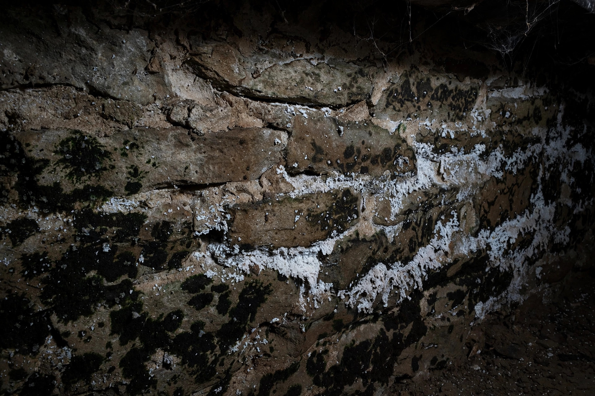

Basement & Cellar Mold Removal
Stone walls, block foundations, musty corners — we clean it, dry it, and help keep it from returning.
Seasonal basement watch
Caldwell basements follow a yearly rhythm. Knowing the pattern helps you catch problems early.
Spring
Snowmelt and rain raise the water table. Check floor-wall joints and sump operation weekly through April.
Summer
Warm humid air condenses on cool basement walls. A dehumidifier set to 50% relative humidity prevents most summer growth.
Winter
Frozen discharge lines and pipe bursts are the winter risks. Insulate exposed pipes and keep the basement above freezing.
Questions, answered plainly
Why do Caldwell basements get moldy?
Many sit below grade in soil that holds moisture, and older stone or block foundations wick water inward. Without a vapor barrier or dehumidifier, relative humidity stays high enough for growth much of the year.
Is white powder on my basement wall mold?
Often it is efflorescence — mineral salts left when water evaporates through masonry. It signals moisture movement, which matters, but it is not mold itself. We can tell the difference on sight.
Do you waterproof basements?
Our focus is mold removal and drying. When the inspection shows bulk water entry, we explain what a waterproofing contractor would address and sequence our work so it is not undone.
Will a dehumidifier solve it alone?
A dehumidifier helps control humidity but cannot remove existing growth or fix water coming through walls. Think of it as maintenance after cleanup, not a substitute.
How long before I can use the basement again?
Most basement jobs finish within a few days. You can use unaffected areas throughout, and we confirm dryness with meters before calling it done.
After cleanup: keeping it dry
- Dehumidifier sized to the space, draining automatically
- Exterior grading and downspouts moving water away
- Sealed cracks and monitored humidity through the seasons
Musty basement? Let's take a look.
We will find where the moisture comes from and give you a clear plan — not just a spray-and-pray.
Open 24 hours · Serving Caldwell and Canyon County
Where basement moisture comes from
Foundation seepage
Hydrostatic pressure pushes groundwater through cracks and porous masonry, especially in spring when the water table rises.
Poor exterior grading
Soil sloping toward the house funnels roof and yard water straight to the foundation. Regrading is often the cheapest real fix.
Plumbing overhead
Supply and drain lines run through basement ceilings. A slow drip from a Caldwell-era galvanized line feeds growth on joists for months unnoticed.
Stored boxes in a 1960s basement start smelling musty each March. The culprit is a hairline foundation crack that seeps only during snowmelt season. Cleanup plus crack sealing and a dehumidifier breaks the yearly cycle.
Sources: EPA — Mold, Moisture & Your Home · CDC — Mold

Caldwell basement types we see
Stone cellars
Pre-1940s homes often have stacked-stone foundations. Mortar joints wick moisture and grow mold in the joints first.
Block walls
Mid-century block basements let water through porous cores. Paint bubbles and white deposits are early warnings.
Partial basements
Many ranch homes have half-basements that trap humid air with little ventilation. A dehumidifier and airflow plan usually follow cleanup.
What a basement visit includes
Full perimeter walk
Every wall gets checked — inside corners, the floor-wall joint, and behind stored items where air never moves. Problem areas are photographed and metered on the spot.
Moisture source identification
Seepage, condensation, and plumbing leaks leave different signatures. Naming the right source determines whether the fix is grading, a dehumidifier, or a plumber.
Written findings
You receive a clear summary: what was found, where the moisture originates, and what remediation would involve — with photos, not just opinions.
Honest scope
If the issue is minor enough for a dehumidifier and better airflow, we say so. Not every musty basement needs a full remediation crew.